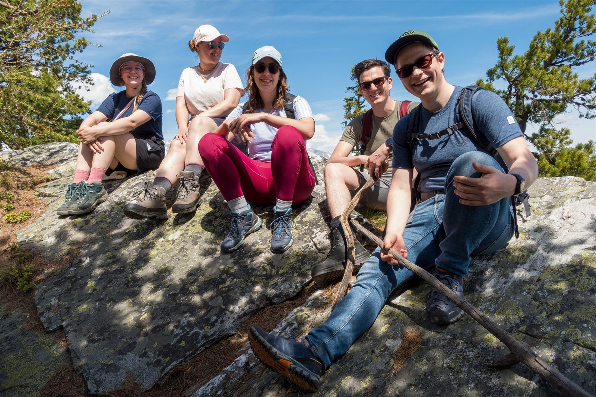

Wanderwochenende in Törbel
Sportliche Tage, steile Wege und ein wohlverdientes Raclette im Wallis.
Weiterlesen →Berichte, Rückblicke und Neuigkeiten aus dem Verbindungsleben der AV Froburger.
Blog & Berichte
Derzeit sind die publizierten Berichte aus dem Frühjahr 2026 hier gesammelt.

Sportliche Tage, steile Wege und ein wohlverdientes Raclette im Wallis.
Weiterlesen →
Aktivitas und Alt-Froburger reisten gemeinsam nach Efringen-Kirchen.
Weiterlesen →Zwischen Zugstillstand, steilen Aufstiegen und Walliser Bergwegen zeigte sich das Wanderwochenende für manche Froburger sportlicher als für andere.
Vom 1. bis 3. Mai 2026 verbrachten die Froburger ein gemeinsames Wanderwochenende in Törbel. Die Mischung aus anspruchsvollen Wegen, guter Gesellschaft und einem ausgiebigen Raclette sorgte für reichlich Gesprächsstoff.
Bereits die Reise ins Wallis verlangte der Gruppe einiges ab. Ein Zugstillstand verzögerte die Ankunft, während das umfangreiche Gepäck über längere Strecken auf den Schultern getragen werden musste. Nach dem steilen Aufstieg erreichten schliesslich alle die Ferienwohnung in Törbel, die Jade beziehungsweise Jades Eltern grosszügigerweise zur Verfügung gestellt hatten.
Viel Zeit zur Erholung blieb am ersten Tag nicht. Direkt nach der Ankunft stand noch eine als klein angekündigte Wanderung auf dem Programm. Für einen Fuxen war sie nach der beschwerlichen Anreise endgültig zu viel: Etwas bleich um die Nase verabschiedete er sich früher ins Bett.
Nach einem umfangreichen Frühstück führte der Senior die Gruppe am folgenden Tag zur nächsten grösseren Wanderung. Aus Rücksicht auf die weniger Sportlichen fiel die Route kürzer aus als ursprünglich angekündigt. Einige Teilnehmende waren sogar der Ansicht, sie sei kürzer gewesen als die Wanderung des Vortages.
Am Abend zeigte die Gruppe, wo ihre eigentlichen Stärken lagen. Beim traditionell zubereiteten Raclette wurde rund ein halber Laib Käse vernichtet. Gleichzeitig nahmen auch die Bierreserven deutlich ab. In gemütlicher Runde klang damit ein sportliches und geselliges Wanderwochenende aus.
Zurück zu allen Beiträgen ↑Von Basel nach Efringen-Kirchen: ein sonniger Tag mit angeregten Gesprächen, Spargelmenü, Cantus und gelebter Verbindung über Generationen hinweg.
Der Samstag des Froburgerwochenendes begann am 25. April 2026 mit der Generalversammlung der Alt-Froburger, an der auch das Komitee der Aktivitas teilnahm. Danach versammelten sich Froburger und Gäste am internationalen Busbahnhof Basel zur gemeinsamen Spargelfahrt.
Die Fahrt führte über die Grenze nach Efringen-Kirchen zum Restaurant Engemühle. Bei strahlendem Wetter wurden die Teilnehmenden mit einem Apéro empfangen. Schon vor dem Essen entstanden im Sonnenschein viele angeregte Gespräche zwischen Aktiven, Alt-Froburgern und Gästen.
Zum angekündigten Spargelmenü mischten sich die Aktiven bewusst in kleinen Gruppen unter die Alt-Froburger. Dadurch entwickelte sich ein lebendiger Austausch über Generationen hinweg. Cabernet bereicherte das Essen zwischendurch mit passenden Cantus.
Nach der Hauptspeise präsentierten die Fuxen ihre einstudierte Produktion. Besonders die Anspielungen auf Personen, die allen Anwesenden bestens bekannt waren, sorgten für viele Lacher. Der Auftritt wurde mit grossem Applaus und einer erfreulichen Unterstützung für die Fuxenkasse honoriert.
Nach dem Dessert ging es mit dem Car zurück nach Basel. Ein spontaner, kräftiger Cantus während der Rückfahrt machte deutlich, wie gut der Anlass angekommen war. Am Ziel wurden zahlreiche Hände geschüttelt und Umarmungen ausgetauscht.
Für den harten Kern war der Abend damit noch nicht beendet. Die Gruppe zog zur Exkneipe in die Markthalle weiter und liess das Froburgerwochenende bei Essen, verschiedenen Bieren und bereits mit Vorfreude auf die nächste Ausgabe gemütlich ausklingen.
Zurück zu allen Beiträgen ↑